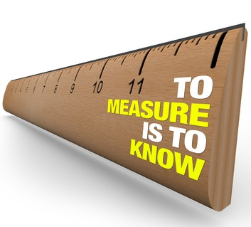
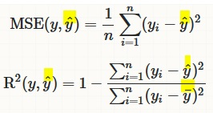
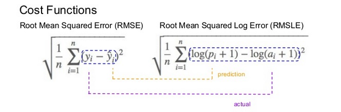

Metrics - MSE, R^2, RMSLE
Obviously it is of great importance to understand and utilize the metrics properly also in machine learning. Deriving insights without making clear sense of metrics is like choosing between 1 litre of milk and 0.6 galon of milk. If we dont know well the metrics litre and galon we can't make an healty decision.
In this notebook we talk about the regression model metrics:
- Mean Squared Error ($MSE$)
- R-Squared ($R^2$)
- Root Mean Squared Logarithmic Error ($RMSLE$)
We will later add new metrics to this notebook by time. 
R-Squared ( $R^2$) and Mean Squared Error ($MSE$)¶

-
$MSE$ measures how far the data are from the model’s predicted values
-
$R^2$ measures how far the data are from the model’s predicted values compare to how far the data are from the mean
-
The difference between how far the data are from the model’s predicted values and how far the data are from the mean is the improvement in prediction from the regression model.
$MSE$¶
- Sensitive to outliers
- Has the same units as the response variable.
- Lower values of $MSE$ indicate better fit.
- Actually, it’s hard to realize if our model is good or not by looking at the absolute values of $MSE$ or $MSE$.
- We would probably want to measure how much our model is better than the constant baseline.
Disadvantage of MSE:
- If we make a single very bad prediction, taking the square will make the error even worse and
- it may skew the metric towards overestimating the model’s badness.
- That is a particularly problematic behaviour if we have noisy data (data that for whatever reason is not entirely reliable)
- On the other hand, if all the errors are smaller than 1, than it affects in the opposite direction: we may underestimate the model’s badness.
$R^2$¶
-
proportional improvement in prediction of the regression model, compared to the mean model (model predicting all given samples as mean value).
-
interpreted as the proportion of total variance that is explained by the model.
-
relative measure of fit whereas $MSE$ is an absolute measure of fit
- often easier to interpret since it doesn't depend on the scale of the data.
- It doesn’t matter if the output values are very large or very small,
-
always has values between
-∞and1. -
There are situations in which a high $R^2$ is not necessary or relevant.
- When the interest is in the relationship between variables, not in prediction, the $R^2$ is less important.
Root Mean Squared Logaritmic Error (RMSLE)¶

Mechanism:
- It is the Root Mean Squared Error of the log-transformed predicted and log-transformed actual values.
-
RMSLEadds1to both actual and predicted values before taking the natural logarithm to avoid taking the natural log of possible0 (zero)values. -
As a result, the function can be used if actual or predicted have zero-valued elements. But this function is not appropriate if either is negative valued
Functionality:
-
The expression $$ log(p_i +1) − log(a_i+1)$$ can be written as $$ log((p_i+1) / (a_i+1)) $$
-
RMSLE measures the ratio of predicted and actual.
RMSLE is preferable when
- targets having exponential growth, such as population counts, average sales of a commodity over a span of years etc
- we care about percentage errors rather than the absolute value of errors.
- there is a wide range in the target variables and
- we don’t want to penalize big differences when both the predicted and the actual are big numbers.
- we want to penalize under estimates more than over estimates.
Let's imagine two cases of predictions,
- Case-1: our model makes a prediction of
30when the actual number is40 -
Case-2: our model makes a prediction of
300when the actual number is400- With RMSE the second result is scored as
10 timesmore than the first result - Conversely, with RMSLogE two results are scored the same.
- RMSLogE takes into account just the ratio of change
- With RMSE the second result is scored as
Lets have a look at the below example
-
Case-3 :
-
Prediction = $600$, Actual = $1000$ (the absolute difference is $400$)
-
RMSE = $400$,
- RMSLogE = $0.5108$
-
-
Case-4 :
-
Prediction = $1400$, Actual = $1000$ (the absolute difference is $400$)
-
RMSE = $400$,
- RMSLogE = $0.3365$
-
- When the differences are the same between actual and predicted in both cases.
- RMSE treated them equally, however
- RMSLogE penalized the under estimate more than over estimate (under estimated prediction score is higher than over estimated prediction score)
- Often, penalizing the under estimate more than over estimate is important for prediction of sales and inventory demands.
- To some extent having extra inventory or supply might be more preferable to not being able to providing product as much as the demand.
Comments